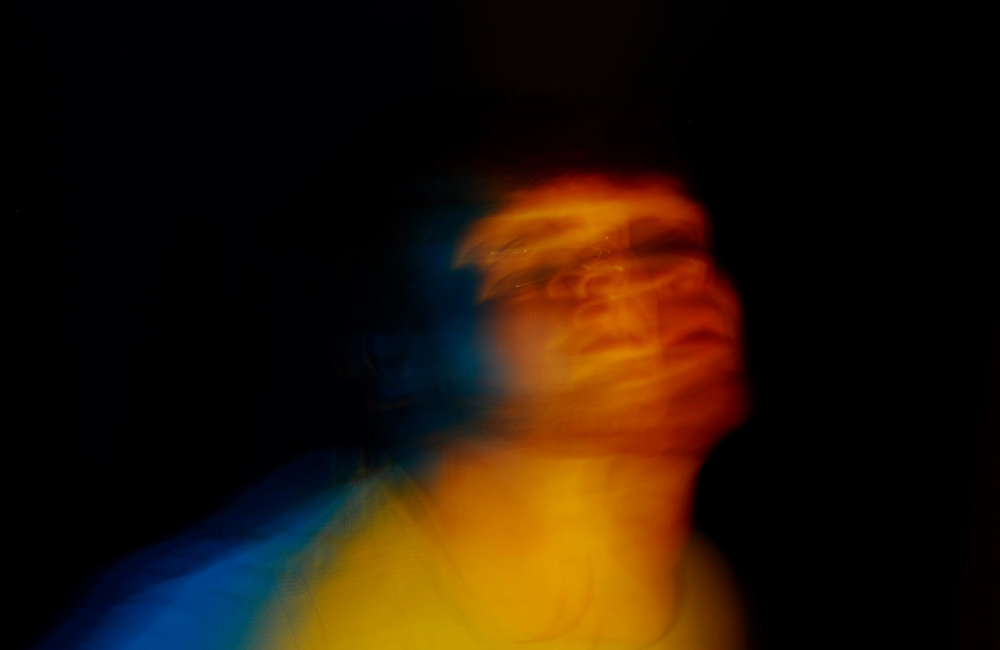
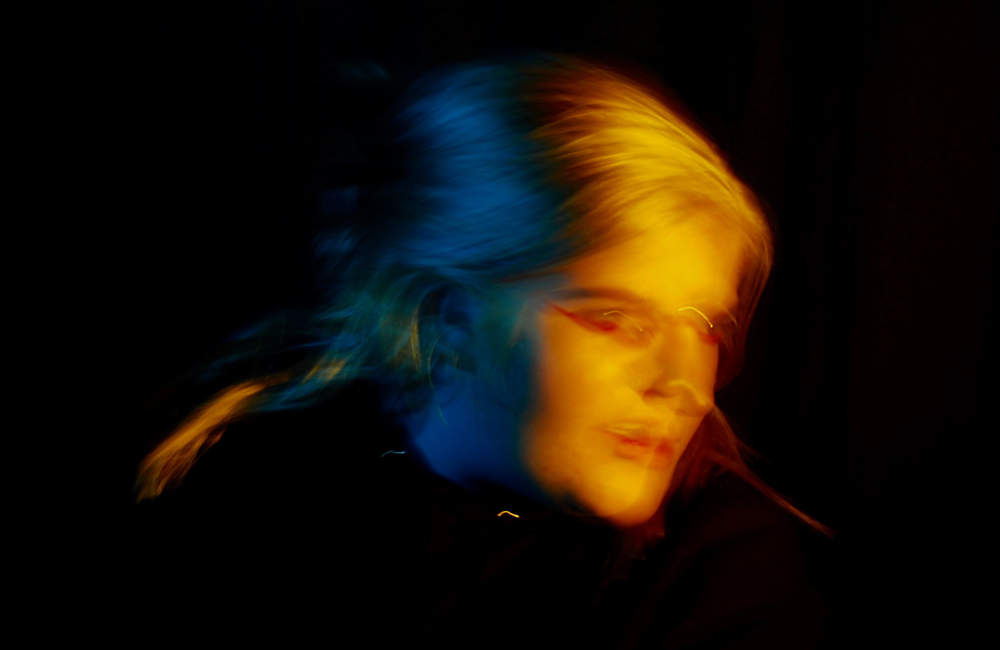
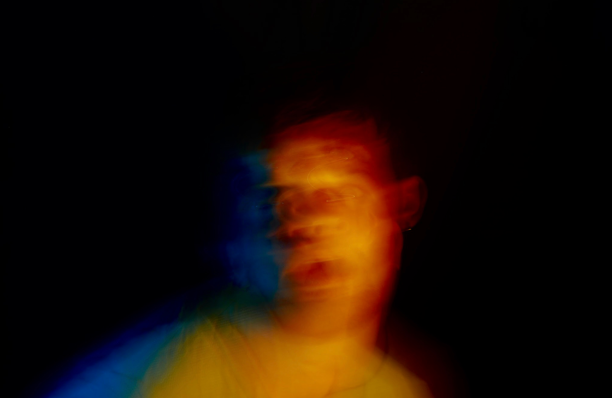

Michael Berliner
Design and Photography
Works
Home
Design
Photography
Contact
1 / 3

2 / 3

3 / 3

❮
❯
Rainbow Light
I created this photo series to explore analog lighting techniques and in camera effects. Using a very slow shutter speed and colored screens, the goal was to mix colors and forms to create interesting portraits. I wanted to put an emphasis on the importance of photographic opportunities within physical forms of photography and print making. In turn, highlighting how analog photo techniques can serve just as much purpose as digital manipulation.